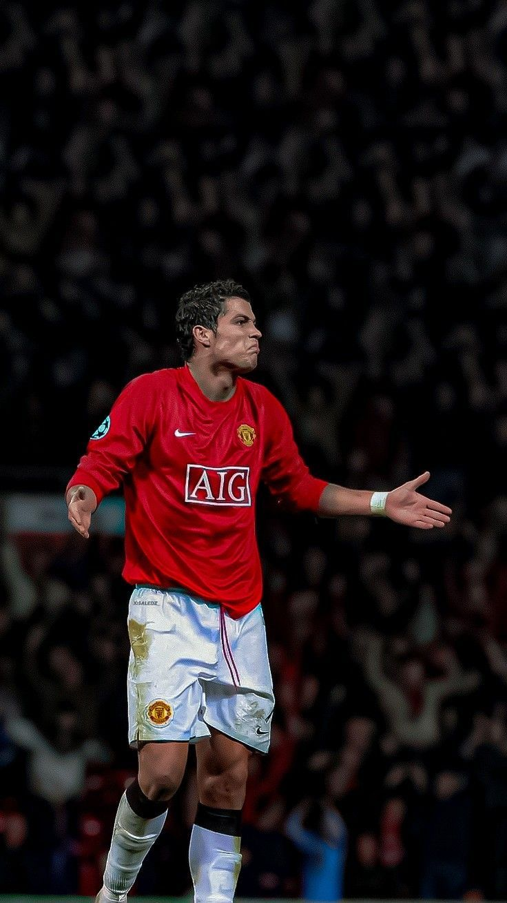

O maior jogador europeu da história, "El Bicho"!
Cristiano Ronaldo, nascido em 1985 em Madeira, Portugal, é um dos maiores jogadores de futebol da história.
Iniciou sua carreira no Sporting CP e destacou-se no Manchester United, onde ganhou sua primeira Bola de Ouro
e conquistou a Liga dos Campeões em 2008. Transferiu-se para o Real Madrid em 2009, tornando-se o maior artilheiro
do clube e conquistando quatro Ligas dos Campeões e quatro Bolas de Ouro. Em 2018, foi para a Juventus, vencendo dois
títulos da Serie A. Retornou ao Manchester United em 2021 e atualmente joga no Al-Nassr, na Arábia Saudita.
Pela seleção portuguesa, é o maior artilheiro da história e
venceu a Eurocopa de 2016 e a Liga das Nações de 2019. Ronaldo é ícone de longevidade e excelência no futebol.

O REI da Argentina e de Barcelona, "La pulga"!
Lionel Messi, nascido em 1987 em Rosario, Argentina, é amplamente considerado um dos maiores jogadores
de futebol de todos os tempos. Formado nas categorias de base do Barcelona, estreou no time principal
em 2004 e tornou-se o maior artilheiro da história do clube, com 672 gols. Durante sua carreira no Barça,
conquistou 10 títulos da La Liga, 4 Ligas dos Campeões e 7 Copas do Rei, além de 6 Bolas de Ouro.
Em 2021, transferiu-se para o Paris Saint-Germain, onde continuou a brilhar, conquistando títulos na França.
Pela seleção argentina, Messi é o maior artilheiro da história e liderou o time à conquista da
Copa América de 2021 e da Copa do Mundo de 2022, consolidando seu legado internacional.

O melhor brasileiro pós Pelé, "Menino Ney"!
Neymar Jr., nascido em 1992 em Mogi das Cruzes, Brasil, é um dos jogadores mais talentosos de sua geração.
Revelado pelo Santos, destacou-se com dribles e gols decisivos, conquistando a Libertadores em 2011.
Transferiu-se para o Barcelona em 2013, formando o lendário trio "MSN" com Messi e Suárez, vencendo a
Liga dos Campeões e diversos títulos.
Em 2017, tornou-se a transferência mais cara da história ao assinar com o Paris Saint-Germain (PSG).
No clube francês, conquistou múltiplos títulos nacionais e foi peça-chave na campanha que levou o time à
final da Liga dos Campeões em 2020.
Pela seleção brasileira, Neymar é um dos maiores artilheiros de todos os tempos, tendo conquistado a Copa
das Confederações de 2013 e o ouro olímpico em 2016. Reconhecido por sua habilidade, carisma e impacto cultural,
Neymar é um ícone do futebol mundial.